Final Exhibition
Two films made for the final exhibition of the research — the project, end to end.
Introduction
Homunculus Bloc is a project designed to develop a workflow that employs machine learning to enable a computer to monitor physical, 3D-printed blocks. The system opens multiple ways of staying hands-on in the design process: architects intuitively manipulate the blocks, and the system converts those physical attributes into digital models — preserving the natural creativity of manual design while still drawing on computational power.
Computer-assisted design technologies are now so dominant that they greatly reduce the need for a designer's hands-on involvement. Architects reach for BIM, parametric modeling, procedural modeling, and generative AI to solve design problems. But does this evolution enhance architectural intelligence? Do we still need our hands to improve it?
Why “homunculus”?
The sensory (or motor) homunculus is a visual representation of how the brain perceives the body. Body parts are drawn in proportion to how much cortex is dedicated to them: the hands and lips appear enormous because they carry the most sensory nerve endings — the most brain power.
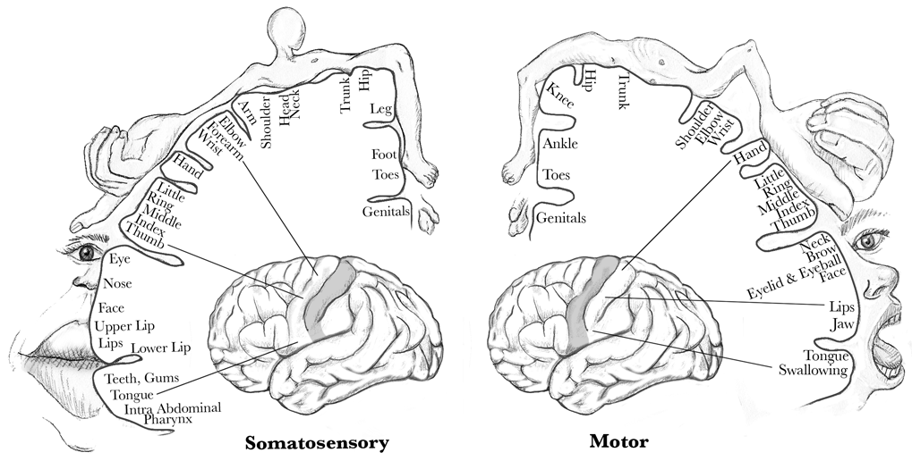
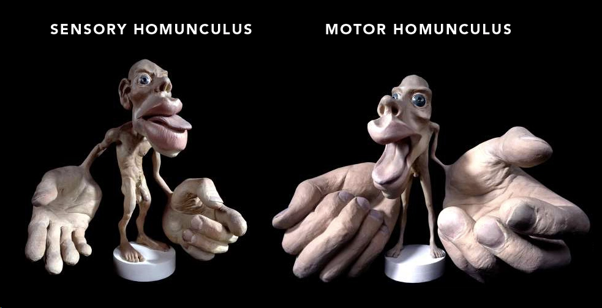
The rise of computers, smartphones, and touch screens has significantly decreased the practice of real-world, hands-on skills. We do almost everything virtually, on screens; our hands mostly tap keys and swipe glass, which reduces the stimulation reaching the sensorimotor cortex. If we are not fully utilizing our hands, perhaps we are also not fully utilizing our brains. What might the long-term effects be, on us and on our society?
As the old saying goes — use it or lose it.
The Homunculus Bloc
The Homunculus Bloc is a 3D-printable object made to be handled: it interlocks with other blocks and is shaped so a computer can efficiently track each block's unique ID, position, and orientation. Those attributes synchronize with the digital environment, so the computer is aware of hand interactions in real time.
Computer vision
Synthetic data generated by the computer makes training cost-effective. The trained model lets the computer recognize the physical blocks in the real world.
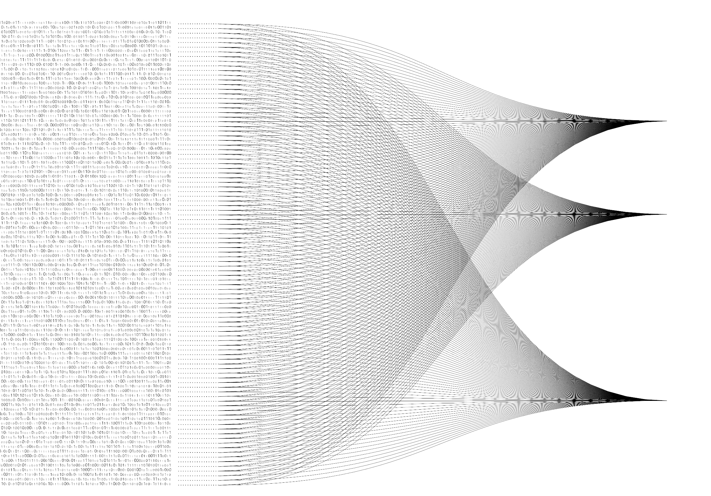
The video below shows the result: the digital modeling environment captures attributes from the physical blocks, then generates input for a diffusion model, which turns the arrangement into images.
Voxel System
Adding a semantic, color-coded layer to the traditional Wave Function Collapse (WFC) method makes its results interactively controllable — turning WFC into a design tool. The key is a 3D voxel meta-structure that stores semantic attributes in each voxel's color, value, and tensor information; the algorithm then links meta-tiles to detailed tiles in real time.
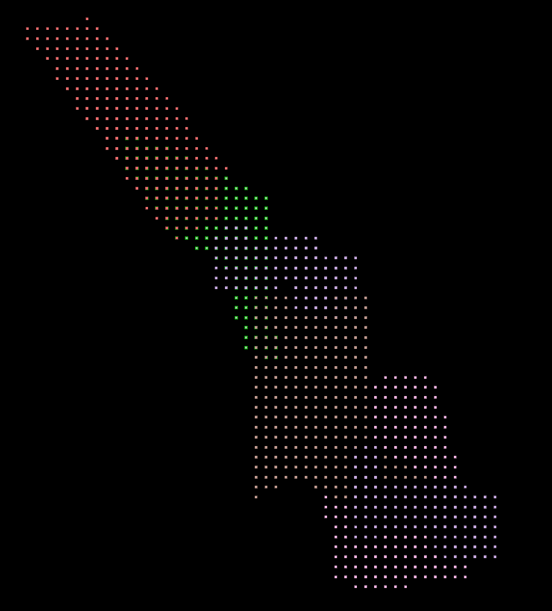
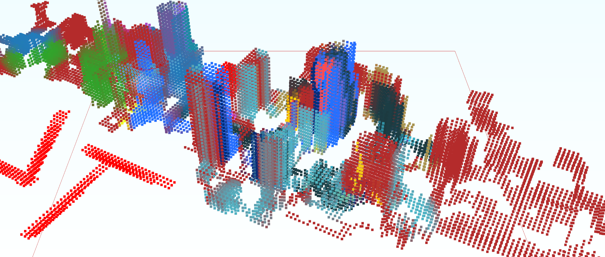
Taming 226 neighbors
In 3D Wave Function Collapse, a voxel has 26 possible neighboring positions — 226 potential neighbor configurations, an extremely large number. The moon's phases are a useful analogy for managing that complexity: just as the elliptical phase is the most common, most voxel neighborhoods follow common patterns. Like the full moon arriving every month, some configurations are less frequent but still predictable. And there are rare events — the supermoon, the blue moon, the harvest moon — the least common neighborhoods of all.
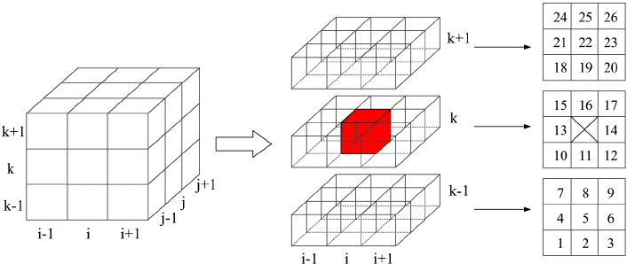
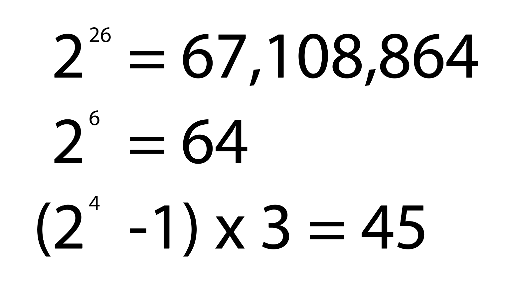
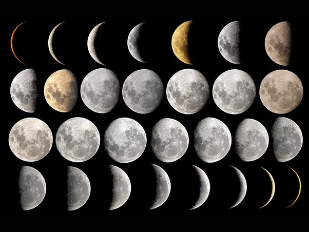
The voxel sculpting tool below (work in progress) lets designers intuitively shape the voxel field with multiple sets of semantic WFC modules.
AI × AI Grasshopper Plugin
Grasshopper is the user interface that brings these technologies together: block tracking, voxel sculpting, delegates, point clouds, diffusion agents, and WFC part-making live as components inside the Rhino environment, intuitively driving the attributes of the voxel system.
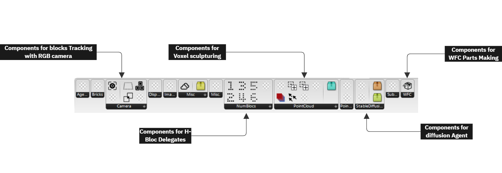
Lineage
The voxel field has ancestors. Superstudio's Continuous Monument and Supersurface (1966–1978) imagined the grid as an infinite, neutral field for life — an architecture reduced to a lattice that people inhabit through their own acts. The Homunculus Bloc borrows that field and hands it back to the fingertips.
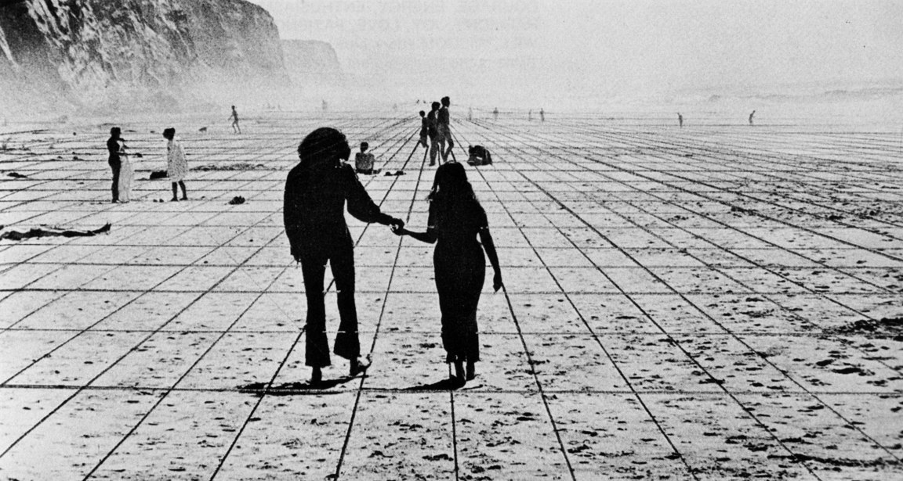
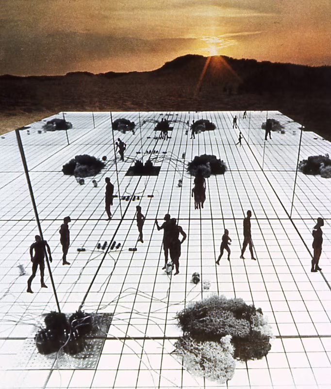
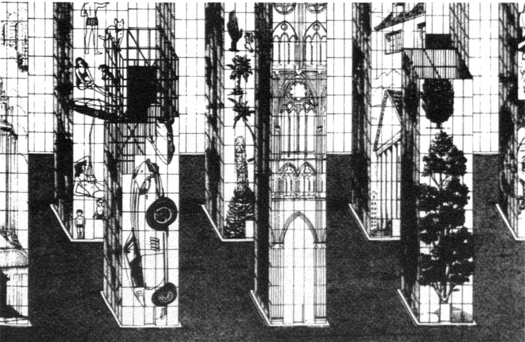
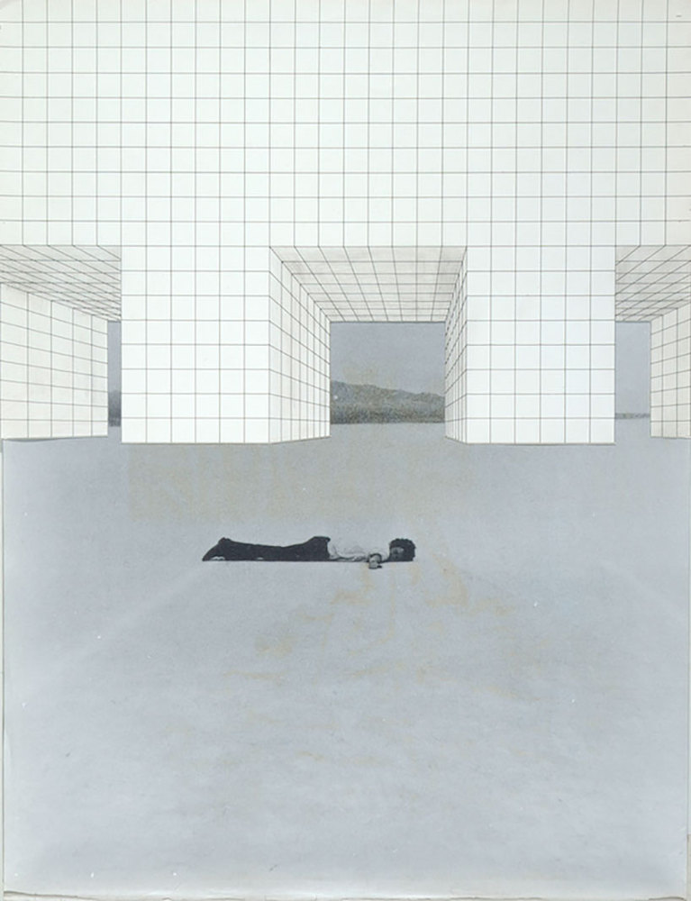
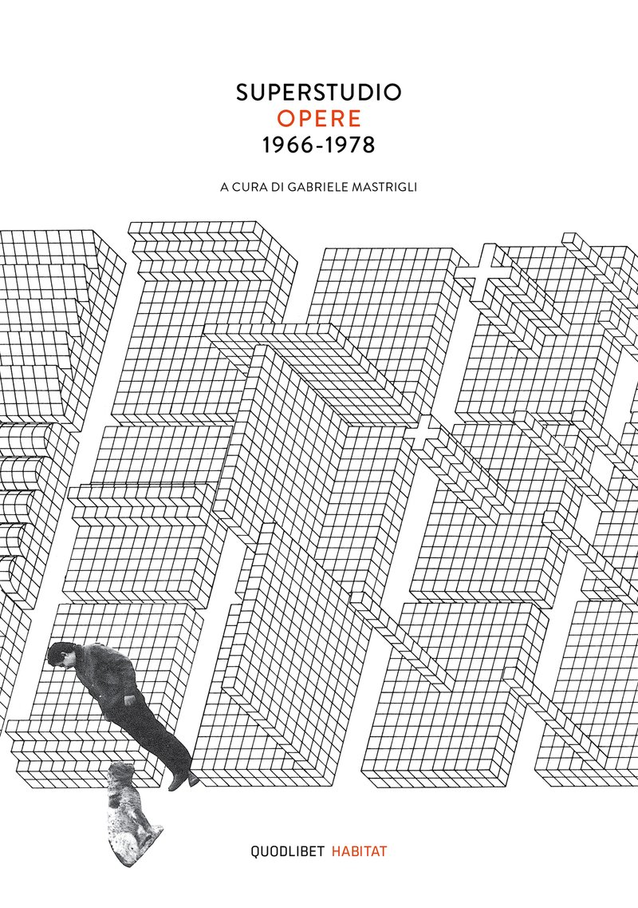
About
Tianxiao Peng is a California-licensed architect with 15 years of professional experience, specializing in innovative design using open-source tools. He has 12 years of Grasshopper scripting and 10 years of Python programming behind him, and is currently developing a Grasshopper plugin in C#. Tianxiao holds a Master of Science from SCI-Arc and a Master of Architecture from Ball State University. He is committed to leveraging technology's profound impact on architecture and society.